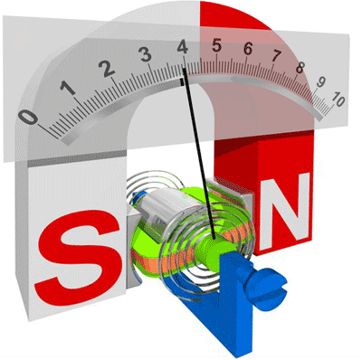
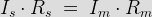
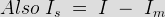
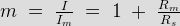

Permanent Magnet Moving Coil Instrument
The permanent magnet moving coil instrument or PMMC type instrument uses two permanent magnets in order to create stationary magnetic field. These types of instruments are only used for measuring the dc quantities as if we apply ac electric current to these type of instruments the direction of electric current will be reversed during negative half cycle and hence the direction of torque will also be reversed which gives average value of torque zero. The pointer will not deflect due to high frequency from its mean position showing zero reading. However it can measure the direct electric current very accurately.
Let us move towards the constructions of permanent magnet moving coil instruments. We will see the construction of these types of instruments in five parts and they are described below:

(a) Stationary part or magnet system: In the present time we use magnets of high field intensities, high coercive force instead of using U shaped permanent magnet having soft iron pole pieces. The magnets which we are using nowadays are made up of materials like alcomax and alnico which provide high field strength.
(b) Moving coil: The moving coil can freely moves between the two permanent magnets as shown in the figure given below. The coil is wound with many turns of copper wire and is placed on rectangular aluminium which is pivoted on jeweled bearings.
(c) Control system: The spring generally acts as control system for PMMC instruments. The spring also serves another important function by providing the path to lead electric current in and out of the coil.
(d) Damping system: The damping force hence torque is provided by movement of aluminium former in the magnetic field created by the permanent magnets.
(e) Meter: Meter of these instruments consists of light weight pointer to have free movement and scale which is linear or uniform and varies with angle.
Let us derive a general expression for torque in permanent magnet moving coil instruments or PMMC instruments. We know that in moving coil instruments the deflecting torque is given by the expression:
Td = NBldI where N is number of turns,
B is magnetic flux density in air gap,
l is the length of moving coil,
d is the width of the moving coil,
And I is the electric current.
Now for a moving coil instruments deflecting torque should be proportional to current, mathematically we can write Td = GI. Thus on comparing we say G = NBIdl. At steady state we have both the controlling and deflecting torques are equal. Tc is controlling torque, on equating controlling torque with deflection torque we have
GI = K.x where x is deflection thus electric current is given by

Since the deflection is directly proportional to the electric current therefore we need a uniform scale on the meter for measurement of current.
Now we are going to discuss about the basic circuit diagram of the ammeter. Let us consider a circuit as shown below:
Basic Ammeter Circuit
The electric current I is shown which breaks into two components at the point A. The two components are Is and Im. Before I comment on the magnitude values of these currents, let us know more about the construction of shunt resistance. The basic properties of shunt resistance are written below,
The electrical resistance of these shunts should not differ at higher temperature, it they should posses very low value of temperature coefficient. Also the resistance should be time independent. Last and the most important property they should posses is that they should be able to carry high value of electric current without much rise in temperature. Usually manganin is used for making dc resistance. Thus we can say that the value of Is much greater than the value of Im as resistance of shunt is low. From the we have,

Where Rs is resistance of shunt and Rm is the electrical resistance of the coil.

From the above two equations we can write,

Where m is the magnifying power of the shunt.
Errors in Permanent Magnet Moving Coil Instruments
There are three main types of errors:
(a) Errors due to permanent magnets: Due to temperature effects and aging of the magnets the magnet may lose their magnetism to some extent. The magnets are generally aged by the heat and vibration treatment.
(b) Error may appear in PMMC Instrument due to the aging of the spring. However the error caused by the aging of the spring and the errors caused due to permanent magnet are opposite to each other, hence both the errors are compensated with each other.
(c) Change in the resistance of the moving coil with the temperature: Generally the temperature coefficients of the value of coefficient of copper wire in moving coil is 0.04 per degree celsius rise in temperature. Due to lower value of temperature coefficient the temperature rises at faster rate and hence the resistance increases. Due to this significant amount of error is caused.
Advantages of Permanent Magnet Moving Coil Instruments
(1)The scale is uniformly divided as the electric current is directly proportional to deflection of the pointer. Hence it is very easy to measure quantities from these instruments.
(2)Power consumption is also very low in these types of instruments.
(3)Higher value of torque is to weight ratio.
(4)These are having multiple advantages, a single instrument can be used for measuring various quantities by using different values of shunts and multipliers.
Instead of various advantages the permanent magnet moving coil instruments or PMMC Instrument posses few disadvantages.
Disadvantages of Permanent Magnet Moving Coil Instruments
(1) These instruments cannot measure ac quantities.
(2) Cost of these instruments is high as compared to moving iron instruments.
 by
by